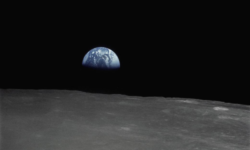

-

Người trẻ Việt Nam cất tiếng nói về khí hậu
12:00 - 20/6/2022
Xem tin này ...
-

Trái đất trải qua thời kỳ nóng nhất trong 1.400 năm
12:00 - 20/6/2022
Xem tin này ...
-
Xây dựng ý thức bảo vệ môi trường
12:00 - 20/6/2022
Xem tin này ...
-
Mặt trăng có thể từng là một phần của địa cầu
12:00 - 20/6/2022
Xem tin này ...
-

Bằng chứng giúp con người nhận ra Trái Đất không phẳng
12:00 - 20/6/2022
Xem tin này ...
-

Hình ảnh Trái Đất nhìn từ các hành tinh khác trong vũ trụ
12:00 - 20/6/2022
Xem tin này ...
-
Hình ảnh Trái Đất nhìn từ các hành tinh khác trong vũ trụ
12:00 - 20/6/2022
Xem tin này ...
TIN TỨC NỔI BẬT TRONG TUẦN
TIN TỨC TRONG TUẦN
Sắp Xếp theo
Sắp điễn ra Hội nghị môi trường toàn quốc lần thứ V
Linh Chi - 19:26 14/06/2022
(TN&MT) - Ngày 14/6, Văn phòng Chính phủ ra văn bản số 3678/VPCP-NN thông báo ý kiến chỉ
đạo của Phó Thủ tướng Chính phủ Lê Văn Thành về việc chủ trương tổ chức Hội nghị môi trường toàn quốc lần thứ V.
Sơn La: Xây dựng chính sách hỗ trợ phát triển thị trường
Nguyễn Nga - 16:41 14/06/2022
(TN&MT) - Đây là một trong 6 nhiệm vụ trọng tâm do tỉnh Sơn La đề ra, nhằm triển khai Quyết
định số 497/QĐ-TTg, ngày 21/4/2022 của Thủ tướng Chính phủ và Kế hoạch của Ban thường vụ Tỉnh ủy thực hiện Chỉ thị số 10-CT/TW ngày 25/9/2021...
Miền Trung: Hiệu quả từ Tổ cộng đồng “cứu” nguồn lợi thủy
Võ Hà - 14:10 14/06/2022
(TN&MT) - Đến nay tại nhiều tỉnh, thành ở miền Trung đã thành lập các
Tổ cộng đồng bảo vệ môi trường biển và nguồn lợi thuỷ sản (tổ cộng đồng).
USAID tài trợ 65 triệu USD cho thích ứng biến đổi khí hậu
Khánh Ly - 14:06 14/06/2022
Bộ Nông nghiệp và Phát triển nông thôn (Bộ NN&PTNT) và Cơ quan Phát triển Quốc tế Hoa Kỳ (USAID)
vừa ký kết 2 thỏa thuận hợp tác trị giá 65 triệu USD về chống buôn bán động vật hoang dã trái phép và ứng phó với biến đổi khí hậu tại Đồng bằng sông Cửu Long.
Hậu Giang: Tăng cường công tác quản lý, bảo vệ môi trường
Lê Hùng - 13:58 14/06/2022
(TN&MT) - Thời gian qua, các cấp, các ngành, hội đoàn thể đã tập trung triển khai thực hiện nhiều giải pháp nhằm nâng cao hiệu quả công tác quản lý,
bảo vệ môi trường (BVMT) tại khu vực đô thị cũng như nông thôn,...
TP.HCM: Dùng công nghệ để cảnh báo ô nhiễm không khí
Nguyễn Quỳnh - 13:57 14/06/2022
(TN&MT) - Mới đây, tại Hội thảo "Mô hình hóa tác động của không khí ô nhiễm và biến đổi khí hậu (BĐKH) đối với sức khỏe cộng đồng tại TP.HCM” do Đại học Quốc gia TP.HCM phối hợp với Đại học Dublin (Ireland) tổ chức,...
Nguồn “tài chính xanh” đồng hành với doanh nghiệp
Minh Minh - 13:55 14/06/2022
(TN&MT) - Sau 20 năm hoạt động, Quỹ Bảo vệ môi trường Việt Nam đã thực sự là người bạn đường tin cậy của các đơn vị trong và ngoài
nước trong công cuộc cải thiện và phục hồi môi trường ở Việt Nam. Với mức lãi suất ưu đãi cố định trong...
Quỹ Bảo vệ môi trường Việt Nam (VEPF): Hai mươi năm nỗ lực vì một Việt Nam xanh
19:26 14/06/2022
(TN&MT) - Tròn 20 năm, Quỹ Bảo vệ môi trường
Việt Nam từ quy mô vốn điều lệ 200 tỷ đồng đã tăng lên 1.000 tỷ đồng...
Diễn biến bất thường của thời tiết năm 2022 - Lời giải từ cơ quan dự báo
Thanh Tùng (thực hiện) - 09:46 14/06/2022
(TN&MT) - Thời tiết miền Bắc trong tháng 5 và những ngày đầu tháng 6/2022 có vẻ “mát mẻ” hơn so với mọi năm.
Đắk Nông: Hiệu quả từ công tác chi trả dịch vụ môi trường rừng
Phạm Hoài - 08:46 14/06/2022
(TN&MT) - Chi trả dịch vụ môi trường rừng (DVMTR) trên địa bàn tỉnh Đắk Nông đã và
đang có những đóng góp đáng kể cho công tác bảo vệ và phát triển rừng.
Dự báo ngày 14/6, Hà Nội có mưa vừa, mưa to và dông
Mai Đan - 08:44 14/06/2022
(TN&MT) - Theo Trung tâm dự báo khí tượng thuỷ văn quốc gia, từ sáng 14/6 đến ngày 15/6, ở Hà Nội và các tỉnh phía Bắc,
Thanh Hóa và Nghệ An có mưa vừa, mưa to và giông, có nơi mưa rất to.
Phối hợp thông tin dự báo đến địa phương: Chủ động, linh hoạt, kịp thời, độ tin cậy cao
Thanh Tùng - 23:33 13/06/2022
(TN&MT) - Đối với các Đài KTTV khu vực, việc phối hợp chặt chẽ với các địa phương,
chủ động chia sẻ thông tin dự báo kịp thời,...
Cao Bằng: Một người bị nước lũ cuốn trôi do mưa lớn
Nguyễn Hùng - 14:43 13/06/2022
(TN&MT) - Do ảnh hưởng của rãnh áp thấp, gây mưa diện rộng trên địa bàn tỉnh Cao Bằng,
mưa vừa, mưa to cục bộ, có nơi mưa rất to làm ngập úng, sạt lở đất đá gây thiệt hại về người, nhà cửa và hoa màu của nhân dân.
Ngày 13/6, Bắc Bộ và Bắc Trung Bộ có nắng nóng
Thanh Tùng - 07:47 13/06/2022
(TN&MT) - Theo Trung tâm Dự báo KTTV Quốc gia, hôm nay (13/6), khu vực từ Thanh Hóa đến Phú Yên có nắng nóng, có nơi
nắng nóng gay gắt với nhiệt độ cao nhất phổ biến 35-37 độ, có nơi trên 38 độ.
Thời tiết ngày 12/6: Vùng núi Bắc Bộ mưa,...
Việt Khang - 07:52 12/06/2022
Theo Trung tâm Dự báo KTTV Quốc gia, ngqyf 12/6, ở vùng núi và trung du Bắc Bộ có mưa rào và dông, cục bộ có mưa to
(thời gian mưa tập trung vào chiều tối và đêm) với lượng mưa từ 10-30mm, có nơi trên 60mm.
Thời tiết 11/6: Bắc Bộ mưa lớn, Trung Bộ nắng nóng
Thái Hà - 09:39 11/06/2022
Dự báo thời tiết 11/6, miền Bắc tiếp tục mưa to đến rất to và giông, nguy cơ rất cao sạt lở đất và ngập úng. Trung Bộ trong đợt
nắng nóng kéo dài, trời hầm hập đến tối muộn. Tây Nguyên, Nam Bộ ngày nắng, chiều tối mưa giông.